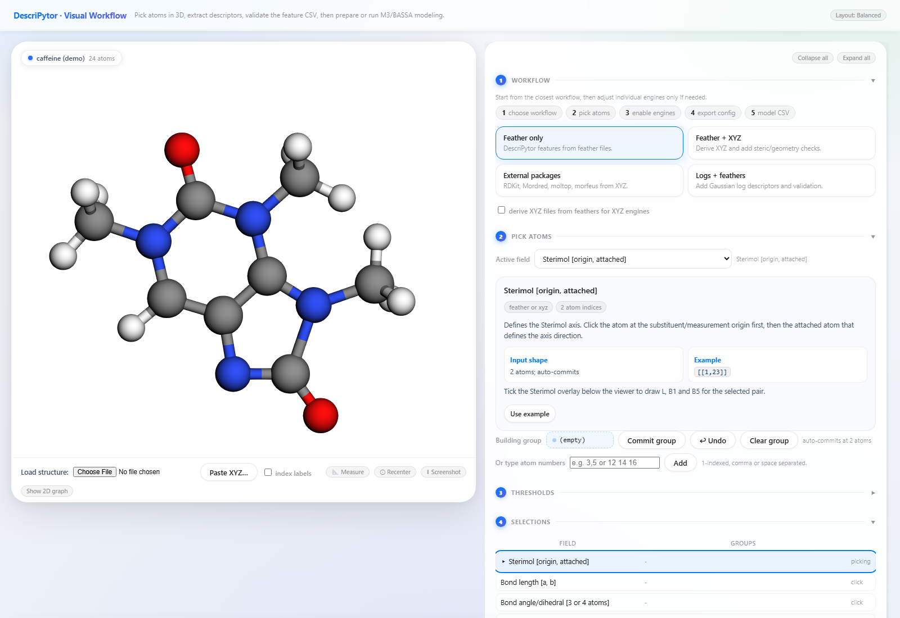
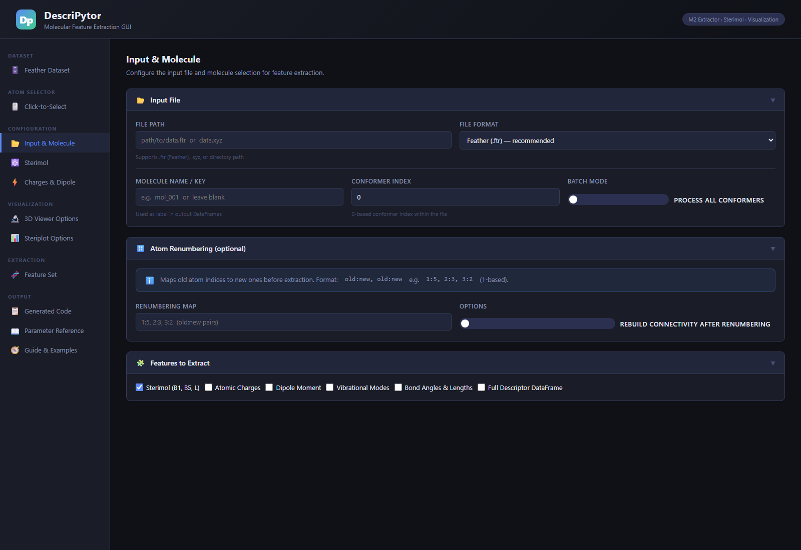

Use Docker. Chemistry software is already in the image. Four steps, then two links in the browser.
Install from docker.com. Wait until it says the engine is running.
Clone the repo and make a work folder for your files.
From the repo folder: docker compose up --build. First time takes several minutes. Leave the terminal open.
Two local pages. Put molecules in work/ on your computer; the GUI sees them as /work/.

http://localhost:7432/visual — 3D picker. Load your own file with Choose File.

http://localhost:7432/ — feature GUI.
Drop .feather, .xyz, or CSV into work/. Results written to /work appear in that same folder. Stop with Ctrl+C, or docker compose down.
Example molecules (26 substituted benzenes) ship with the package. Gaussian .log files: convert first with descripytor logs_to_feather.
| What you see | What to do |
|---|---|
| Cannot connect to Docker | Start Docker Desktop and wait until it is idle |
| Port 7432 or 8503 already in use | Close the other app using that port |
| RDKit / Morfeus errors on pip | Use Docker instead |
That last command opens the desktop window. For the same browser picker as Docker, clone the repo and run python M2_data_extractor/gui_server.py, then open localhost:7432/visual.